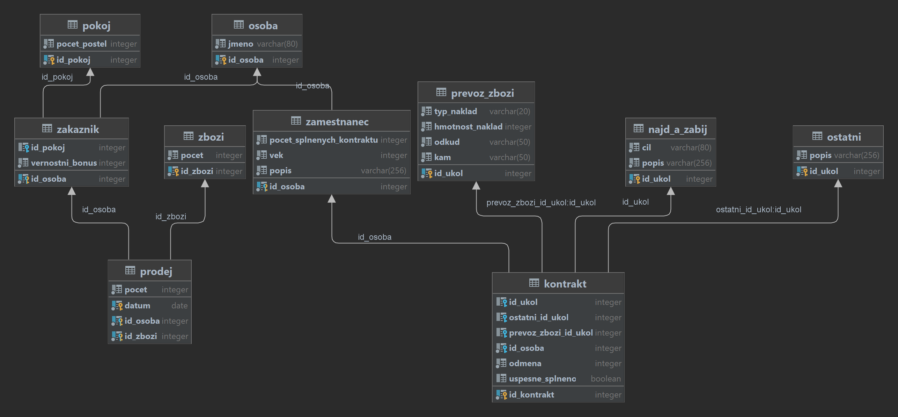

I declare that I have developed my semestral work independently. All the sources I used are listed in the section References.
V dobrodružném vesmíru počítačové hry Lazarovi Parťáci žije Lazar princ J-Manovy říše. Po životě plném hrdinských činů se rozhodl že svá zlatá léta hodlá dožít v klidu. Proto si ve vysokém věku 31 let otevřel svou vesmírnou hospůdku. Pro spravný chod bude potřebovat vymakanou databazi.
Jelikož se hodlá věnovat i prodeji a směně unikátního **Zboží** a vzácnosti bude muset zaznamenávat co vlastni a chce **prodat**. Bude pro něj duležité hlavně za kolik, komu a kdy předmět prodal.
Lazar se ve svém volném čase také rád zabýva organizovaním **vesmírných kontraktů** proto je potřeba zaznamenávat kontrakty které mužou plnit pracovnici na volne noze. Jednotlivé vesmírné kontrakty budou detailně rezepsany do nejmenších podrobností aby se pracovníci mohli informovaně rozhodnout zda ukol přijmou, jestli je k splnění potřeba vybavení případně zda ukol vyzaduje tým pracovníků. Kontrakt bude obsahovat informaci o výši odměny a bude označený podle stavu. V kontraktu bude zaznamenáno zda byl úspěšně dokončen.
Vesmírný kontrakt bude vždy mezi Lazarem a jednotlivými zaměstnanci a musí se týkat právě jednoho úkolu na kterém může zaměstnanec pracovat sám a nebo může spolupracovat s dalšími zaměstnanci. Lazarova hospoda nabízí dva standardní typy úkolu **najdi a zneškodno** nebo **převoz zboží**. Pokud úkol nelze zařadit do standardní kategorie je zařazen do kategorie **ostatní**. Jednotlivé úkoly budou obsahovat již zmíněné specifikace a budou vystaveny na tabuli úkolů v hospodě tak aby každý mohl zvážit zda jej chce plnit.
K vesmírným kontraktům se budou moci přihlašovat **Zaměstnanci**. U zaměstnance budou podstatné jeho osobní informace (jméno, příjmení, osobní identifikator obcana J-Manovy Říše (OIOJR) a počet splněných úkolů) a podle jejich počtu splněných prací se bude rozhodovat o bonusech.
**Zákazník** bude kdokoliv kdo si koupí nějaké zboží nebo pronajme pokoj.
V hospodě je možné si rezervovat **pokoj**. O pokoji bude v databázi zaznamenána jeho velikost, počet postelí a zda je v ceně zahrnuta údrzba. Pokoj si může rezervovat jednotlvý zakazník.

Schema neobsahuje smyčky.

Kód dotazu: D11 [Tabulka pokryti kategorií SQL příkazů]
Vsechny osoby, ktere jsou zakaznici a jejich vernostni bonus.
{osoba[osoba.id_osoba = zakaznik.id_osoba]zakaznik} [id_osoba, jmeno, vernostni_bonus]
SELECT osoba.*, zakaznik.vernostni_bonus FROM osoba JOIN zakaznik USING (id_osoba) ;
Kód dotazu: D12 [Tabulka pokryti kategorií SQL příkazů]
Vypis vsechny atributy osob, ktere nejsou zamestnanci.
osoba!<*zamestnanec
select osoba.* from osoba where id_osoba not in ( select id_osoba from zamestnanec ) ;
Kód dotazu: D13 [Tabulka pokryti kategorií SQL příkazů]
Pokoj na kterem spi pouze zakaznik "Kathy Sherratt".
{pokoj<*{zakaznik[zakaznik.id_osoba = osoba.id_osoba]osoba(jmeno='Kathy Sherratt')}} \ {pokoj<*{zakaznik[zakaznik.id_osoba = osoba.id_osoba]osoba(jmeno!='Kathy Sherratt')}}
select distinct id_pokoj, pocet_postel from pokoj natural join ( select distinct zakaznik.id_osoba, zakaznik.id_pokoj, zakaznik.vernostni_bonus, r1.id_osoba as id_osoba_1, r1.jmeno from zakaznik join ( select distinct * from osoba where jmeno = 'Kathy Sherratt' ) r1 on zakaznik.id_osoba = r1.id_osoba ) r2 except select distinct id_pokoj, pocet_postel from pokoj pokoj1 natural join ( select distinct zakaznik1.id_osoba, zakaznik1.id_pokoj, zakaznik1.vernostni_bonus, r3.id_osoba as id_osoba_1, r3.jmeno from zakaznik zakaznik1 join ( select distinct * from osoba osoba1 where jmeno != 'Kathy Sherratt' ) r3 on zakaznik1.id_osoba = r3.id_osoba ) r4;
Kód dotazu: D14 [Tabulka pokryti kategorií SQL příkazů]
Zbozi, ktere si koupili vsichni zakaznici.
zbozi_vsechno:=zbozi[id_zbozi] zakaznici:=zakaznik[id_osoba] vsechny_kombinace:=zbozi_vsechno×zakaznici realne_kombinace:=prodej[id_zbozi, id_osoba] nenastale_kombinace:=vsechny_kombinace\realne_kombinace zbozi_ktere_neprodalo_vsem:=nenastale_kombinace[id_zbozi] zbozi_ktere_prodalo_vsem:=zbozi[id_zbozi]\zbozi_ktere_neprodalo_vsem zbozi_ktere_prodalo_vsem*zbozi
select * from zbozi z where not exists( select * from zakaznik o where not exists( select z from prodej p where o.id_osoba = p.id_osoba and z.id_zbozi = p.id_zbozi ) )
Kód dotazu: D15 [Tabulka pokryti kategorií SQL příkazů]
Kontrola dotazu D4.
select * from zakaznik except select o.* from zakaznik o join prodej p using(id_osoba) where id_zbozi = ( select id_zbozi from zbozi z where not exists( select * from zakaznik o where not exists( select z from prodej p where o.id_osoba = p.id_osoba and z.id_zbozi = p.id_zbozi ) ) ) ;
Kód dotazu: D16 [Tabulka pokryti kategorií SQL příkazů]
Vytvor pohled obsazenych pokoju na kterych bydli verni zakaznici.
create or replace view pokoje as select * from pokoj p where p.pocet_postel > 2 and exists ( select * from zakaznik z where z.id_pokoj = p.id_pokoj and z.vernostni_bonus > 3 ); select * from pokoje;
Kód dotazu: D17 [Tabulka pokryti kategorií SQL příkazů]
Vytvor pohled obsazenych pokoju na kterych bydli verni zakaznici a z nich vyber pokoje ktere maji pocet posteli vetsi jak 9.
create or replace view pokoje as select * from pokoj p where p.pocet_postel > 2 and exists ( select * from zakaznik z where z.id_pokoj = p.id_pokoj and z.vernostni_bonus > 3 ); select * from pokoje where pocet_postel > 9;
Kód dotazu: D18 [Tabulka pokryti kategorií SQL příkazů]
Smaz osoby ktere nejsou zakaznici ani zamestnanci.
begin; select * from osoba; delete from osoba where id_osoba not in ( select a.id_osoba from zakaznik a union select z.id_osoba from zamestnanec z ); select * from osoba; rollback;
Kód dotazu: D20 [Tabulka pokryti kategorií SQL příkazů]
Pro kazdy typ nakladu spocitej kolik se odvezlo kg. Zajima nas pouze naklad odvezeny z mesta Bajiao a jen ty typy kterych se dohromady odvezlo vice jak 2000kg. Vysledek serad podle velikosti celkoveho odvezeneho nakladu.
select typ_naklad, sum(hmotnost_naklad) as celkove_odvezeno_kg from prevoz_zbozi where odkud='Bajiao' group by typ_naklad having sum(hmotnost_naklad)>2000 order by celkove_odvezeno_kg desc
Kód dotazu: D21 [Tabulka pokryti kategorií SQL příkazů]
Najdi vsechny zamestnance, kteri jsou zaroven zakaznici a vypis i ty co nejsou zakaznici.
select * from zamestnanec left join zakaznik using(id_osoba)
Kód dotazu: D22 [Tabulka pokryti kategorií SQL příkazů]
Vsichni zakaznici, kteri jsou zaroven zamestnanci.
select * from zakaznik full join zamestnanec using(id_osoba)
Kód dotazu: D23 [Tabulka pokryti kategorií SQL příkazů]
Spocitej kolik kontraktu plni nebo splnil kazdy zamestnanec.
select o.jmeno, (select count(*) from kontrakt k where k.id_osoba = z.id_osoba) as pocet_kontraktu from zamestnanec z join osoba o using(id_osoba);
Kód dotazu: D24 [Tabulka pokryti kategorií SQL příkazů]
Najdi osoby ktere jsou zamestnanci a vypis ktere plni kontrakty a jakou odmenu dostanou.
select o.jmeno, g.id_kontrakt, g.odmena from ( select k.id_kontrakt, k.odmena, z.id_osoba from kontrakt k join zamestnanec z using(id_osoba) ) as g join osoba o using(id_osoba)
Kód dotazu: D25 [Tabulka pokryti kategorií SQL příkazů]
Kolik by probehlo nakupu pokud by si kazdy zamestnanec koupil od kazdeho druhu zbozi alespon 1 kus.
select count(*) as pocet_nakupu from zbozi cross join zakaznik;
Kód dotazu: D26 [Tabulka pokryti kategorií SQL příkazů]
Osoby co nemaji zadny kontrakt a nebydli na zadnem pokoji.
select id_osoba from zamestnanec where id_osoba not in( select id_osoba from kontrakt ) intersect select id_osoba from zakaznik where id_pokoj is null
Kód dotazu: D27 [Tabulka pokryti kategorií SQL příkazů]
Zamestnanci kteri nemaji zadne kontrakty
select id_osoba from zamestnanec where id_osoba not in( select id_osoba from kontrakt ); select id_osoba from zamestnanec z where not exists( select 3 from kontrakt k where k.id_osoba = z.id_osoba ); select id_osoba from zamestnanec except select id_osoba from zamestnanec join kontrakt using(id_osoba);
Kód dotazu: D28 [Tabulka pokryti kategorií SQL příkazů]
Zmen popis zamestnance s popisem 'Pre-emptive foreground hardware' na popis 'neco' pokud ma tento zamestnanec alespon jeden uspesne splneny kontrakt.
begin; select * from zamestnanec where popis='Pre-emptive foreground hardware'; update zamestnanec set popis = 'neco' where popis = 'Pre-emptive foreground hardware' and id_osoba in ( select id_osoba from kontrakt where uspesne_splneno = 'true' ); select * from zamestnanec where popis='neco'; rollback;
Kód dotazu: D29 [Tabulka pokryti kategorií SQL příkazů]
Vyber osoby ktere nejsou ani zakaznik ani zamestnanec a pridej je do zakazniku.
begin; select count(*) from osoba where id_osoba not in( select id_osoba from zamestnanec union select id_osoba from zakaznik ); insert into zakaznik(id_osoba, id_pokoj, vernostni_bonus) select id_osoba, null as id_pokoj, 0 as vernostni_bonus from osoba where id_osoba not in( select id_osoba from zamestnanec union select id_osoba from zakaznik ); select count(*) from osoba where id_osoba not in( select id_osoba from zamestnanec union select id_osoba from zakaznik ); rollback;
Kód dotazu: D30 [Tabulka pokryti kategorií SQL příkazů]
Vypis vsechny kontrakty ktere se vazou na typ ukolu prevoz_zbozi a plni je nebo je splnil zamestnanec ktery je starsi nez 20 let.
select * from kontrakt where prevoz_zbozi_id_ukol is not null and id_osoba in( select id_osoba from zamestnanec z where z.vek > 20 ) ;
Kód dotazu: D31 [Tabulka pokryti kategorií SQL příkazů]
Vypis vsechny nakupy ktere probehly pred 18.3.2035 a zaroven vypis jmeno toho kdo nakupoval.
prodej(datum>'18.3.2077')[prodej.id_osoba = osoba.id_osoba]osoba
SELECT * FROM prodej JOIN osoba ON prodej.id_osoba = osoba.id_osoba WHERE datum > '2077-03-18';
Kód dotazu: D32 [Tabulka pokryti kategorií SQL příkazů]
Ukol typu ostatni ktery nikdo neplni.
ostatni!<ostatni.id_ukol=kontrakt.ostatni_id_ukol]kontrakt
select distinct * from ostatni o where not exists( select * from kontrakt where o.id_ukol = kontrakt.ostatni_id_ukol )
Kód dotazu: D33 [Tabulka pokryti kategorií SQL příkazů]
Zbozi ktere si koupil osoba "Vojtech".
osoba(jmeno='Vojtech')[osoba.id_osoba=prodej.id_osoba]prodej[prodej.id_zbozi = zbozi.id_zbozi>zbozi
select z.* from zbozi z join prodej using(id_zbozi) join osoba using(id_osoba) where jmeno='Vojtech'
Kód dotazu: D34 [Tabulka pokryti kategorií SQL příkazů]
Vsichni zakaznici kteri si rezervuji pokoj.
{zakaznik[zakaznik.id_pokoj = pokoj.id_pokoj]pokoj}[zakaznik.id_pokoj ,zakaznik.id_osoba, zakaznik.vernostni_bonus, pokoj.pocet_postel]
select * from zakaznik join pokoj using(id_pokoj)
Kód dotazu: D35 [Tabulka pokryti kategorií SQL příkazů]
Vsechny osoby ktere jsou zakaznici a zamestnanci zaroven.
{zakaznik[zakaznik.id_osoba = zamestnanec.id_osoba]zamestnanec}[zakaznik.id_osoba, zakaznik.vernostni_bonus, zamestnanec.vek, zamestnanec.popis]
select z.id_osoba, z.vernostni_bonus, zm.vek, zm.popis from zakaznik z join zamestnanec zm on zm.id_osoba = z.id_osoba
Kód dotazu: D36 [Tabulka pokryti kategorií SQL příkazů]
Vyber vsechny kontrakty ktere jsou spojene s ukolem typu prevoz zbozi a vyber jenom typ nakladu, hmotnost nakladu, odkud a kam.
{kontrakt[kontrakt.prevoz_zbozi_id_ukol = prevoz_zbozi.id_ukol]prevoz_zbozi}[prevoz_zbozi.typ_naklad, prevoz_zbozi.hmotnost_naklad, prevoz_zbozi.odkud, prevoz_zbozi.kam]
select distinct typ_naklad, hmotnost_naklad, odkud, kam from kontrakt k join prevoz_zbozi pz on k.prevoz_zbozi_id_ukol = pz.id_ukol
| Kategorie | Kódy porývajících dotazů | Charekteristika kategorie příkazu |
|---|---|---|
| A | D11 D21 D22 D23 D24 D27 D31 D33 D34 D35 D36 | A - Positive query on at least two joined tables |
| AR | D11 D31 D33 D34 D35 D36 | A (RA) - Positive query on at least two joined tables |
| B | D12 | B - Negative query on at least two joined tables |
| C | D13 | C - Select only those related to... |
| D1 | D14 | D1 - Select all related to - universal quantification query |
| D2 | D15 | D2 - Result check of D1 query |
| F1 | D13 D31 D35 D36 | F1 - JOIN ON |
| F2 | D11 D13 D15 D21 D22 D23 D24 D27 D33 D34 | F2 - NATURAL JOIN|JOIN USING |
| F2R | D11 D13 D33 D34 | F2 (RA) - NATURAL JOIN|JOIN USING |
| F3 | D25 | F3 - CROSS JOIN |
| F4 | D21 | F4 - LEFT|RIGHT OUTER JOIN |
| F5 | D22 | F5 - FULL (OUTER) JOIN |
| G1 | D12 D14 D15 D16 D17 D18 D26 D27 D28 D29 D30 D32 | G1 - Nested query in WHERE clause |
| G1R | D12 D14 D32 | G1 (RA) - Nested query in WHERE clause |
| G2 | D13 D24 | G2 - Nested query in FROM clause |
| G2R | D13 | G2 (RA) - Nested query in FROM clause |
| G3 | D23 | G3 - Nested query in SELECT clause |
| G4 | D14 D15 D16 D17 D27 D32 | G4 - Correlated nested query (EXISTS|NOT EXISTS) |
| G4R | D14 D32 | G4 (RA) - Correlated nested query (EXISTS|NOT EXISTS) |
| H1 | D18 D29 | H1 - Set unification - UNION |
| H2 | D13 D15 D27 | H2 - Set difference - MINUS or EXCEPT |
| H2R | D13 | H2 (RA) - Set difference - MINUS or EXCEPT |
| H3 | D26 | H3 - Set intersection - INTERSECT |
| I1 | D20 D23 D25 D29 | I1 - Aggregate functions (count|sum|min|max|avg) |
| I2 | D20 | I2 - Aggregate function over grouped rows - GROUP BY (HAVING) |
| J | D27 | J - Same query in 3 different sql statements |
| K | D20 | K - All clauses in one query - SELECT FROM WHERE GROUP BY HAVING ORDER BY |
| L | D16 D17 | L - View |
| M | D17 | M - Query over a view |
| N | D29 | N - INSERT, which insert a set of rows, which are the result of another subquery (an INSERT command which has VALUES clause replaced by a nested query. |
| O | D28 | O - UPDATE with nested SELECT statement |
| P | D18 | P - DELETE with nested SELECT statement |
Na semestralni praci jsem rozhodne nestravil dost casu. Prace mne bavila a jsem si jisty ze chci v podobnem studiu pokracovat. SQL a relacni agebra jsou velmi zajimava temata. Videa ke kazde kategorii dotazu mi velmi pomohla. Odnesl jsem si ze slozene klice nejsou vzdy nejlepsi napad a obcas komplikuji dotazovani nad databazi. Ocenuji ze je k predmetu vytvoren samostatny portal ktery funguje tak dobre jak funguje. Prace v nem je velmi plynula ale ocenil u dotazu bych rad mel tlacitko ulozit vse najednou. A prite nebudu nechavat vse na posledni chvili. Dekuji za trpelivost pri kotrole.
[1] Stránky předmětu DBS.BI-DBS FIT ČVUT Course Pages [online]. FIT ČVUT, 2023, [cit.16.5.2023]. Dostupné z: https://courses.fit.cvut.cz
[2] QUAST, Karel: .Vzorová semestrální práce [online]. FIT ČVUT, 2023, [cit.16.5.2023]. Dostupné z: https://users.fit.cvut.cz/~hunkajir/dbs/main.xml
[3] Mockaroo Random Data Generator and API Mocking Tool. | JSON / CSV / SQL / Excel [online]. Mockaroo, 2023, [cit. 16.5.2023]. Dostupné z: https://www.mockaroo.com/